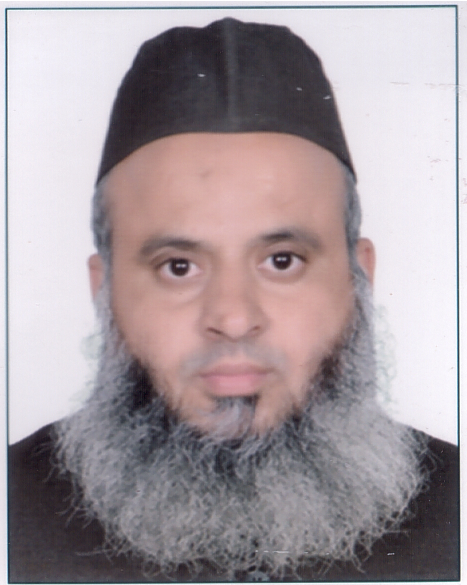

The purpose of 2nd ICECI (IEEE) conference is to provide an international forum for researchers, academicians, industry professionals, and students to present and exchange ideas on recent innovations, trends, and challenges in computer science and its applications. The conference seeks to foster collaboration across academia and industry, bridge the gap between theoretical advances and practical implementations, and highlight emerging technologies that are shaping the future of computing.
KEYNOTE SPEAKERS:

Prof. Dag Øivind Madsen
Department of Business, Marketing and Law, USN School of Business, Norway.

Prof. Muhammad Abulaish
Department of Computer Science, South Asian University (SAU) in New Delhi, India.

Prof. D.P. Vidyarthi
School of Computer & Systems Sciences, JNU, India.

Dr. Iqbal H. Sarker
Centre for Securing Digital Futures, Edith Cowan University (ECU), Perth, Australia.
CONFERENCE AREAS
TRACK 1
Artificial Intelligence, Machine Learning & Deep Learning
(Neural Networks, Reinforcement Learning, Transfer Learning)
TRACK 2
Natural Language Processing & Speech Technologies (LLMs,
Conversational Agents, Multilingual NLP)
TRACK 3
Data Science & Big Data Analytics (Predictive Modeling, Data
Mining, Visualization Techniques)
TRACK 4
Cyber Security, Blockchain & Digital Forensics (Secure
Protocols, Threat Intelligence, Privacy Preserving Techniques)
TRACK 5
Internet of Things (IoT) & Edge Computing (Smart Cities,
Wearable Devices, Sensor Networks)
TRACK 6
Cloud Computing & High-Performance Computing (Virtualization,
Resource Optimization, Green Computing)
TRACK 7
Educational Technologies & E-Learning (Adaptive Learning
Systems, Gamification, MOOCs)
TRACK 8
Human-Computer Interaction & Virtual Reality (AR/VR Interfaces,
User Experience, Assistive Technologies)
TRACK 9
Computational Intelligence & Bio-Inspired Algorithms (Swarm
Intelligence, Evolutionary Computation, Fuzzy Systems)
TRACK 10
Emerging Areas and Applications
CONFERENCE COMMITTEE
General Co-Chair

Prof. Mohammad Rihan
Professor
Department of Electrical Engineering, Z. H. College of Engg. and Technology, A. M. U.
Conference Co-Chair

Prof. Ekram Khan
Professor
Department of Electronics Engineering, Z. H. College of Engg. and Technology, A. M. U.
Publication Committee Chair

Prof. Rashid Ali
Professor
Dept. of Computer Engineering, Z. H. College of Engg. and Technology, A. M. U.
Publicity Chair

Prof. M M Sufyan Beg
Professor
Dept. of Computer Engineering, Z. H. College of Engg. and Technology, A. M. U.
Venue Management Committee Chair

Prof. Yusuf Khan
Professor
Dept. of Electrical Engineering, Z. H. College of Engg. and Technology, A. M. U.
Local Hospitality Chair

Prof. Asfar Ali Khan
Professor
Dept. of Electrical Engineering, Z. H. College of Engg. and Technology, A. M. U.
Track Chair

Prof. Omar Farooq
Professor
Dept. of Electronics Engineering, Z. H. College of Engg. and Technology, A. M. U.
Finance Committee Chair

Dr. Arshad Iqbal
Assistant Professor
K. A. Nizami Centre for Quranic Studies, A. M. U.